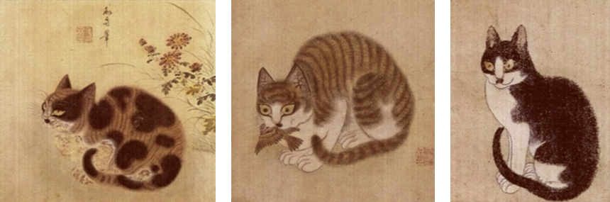

◇ 예술 속 고양이
예술에 기록된 고양이
고양이를 좋아한 나머지 자신의 작품과 생각을 글로까지 남기게 된 인물들이 있었습니다. 한때는 고양이가 좋지 않은 동물이라 인식되었지만 이 인물들은 고양이를 통해 행복을 얻을 수 있었습니다. 그들을 이야기를 알아보세요.
변상벽 (조선 후기의 화가)
고양이 그림으로 출세 가도에 오른 화가
변상벽은 그 당시 유행했던 상수화를 그리고자 했지만 당대 유명했던 화가들을 너무 많아 그림을 포기할 정도로 의욕이 사라지기도 했는데 그림에 대한 의욕을 다시 불러일으킨 존재가 바로 고양이이다. 변상벽은 그날 이후로 고양이에 그림만 그리기 시작했다. 그 그림은 습작으로 시작된 그림이었지만 고양이의 그림이 사람들에게 좋은 반응을 보였으며 당시 조선 사회에 고양이가 장수의 상징으로 오르게 되며 변상벽은 고양이를 그리는 화가로 인정받게 되었다.
<묘작도>
<다양한 고양이 그림>
다양하게 등장하는 화폭 속 고양이
김득신
<야묘도추>
도둑고양이가 병아리를 훔쳐 달아나자 어미 닭이 고양이를 쫓아가며 마루에 앉아있던 부부도 이를 발견하고 고양이를 내 쫓고 있다.
김홍도
<황묘농접도>
단원 김홍도의 그림으로 고양이가 나비를 희롱하는 장난스러운 모습이 담긴 그림이다. 이러한 고양이의 모습은 장수로 상징되어 부모님께 선물을 하기도 했다.
이규보
고려시대 문인
이규보는 고려 무인 집권기 최씨 정권에 활동한 문인 중의 한 사람이다. 이규보가 남긴 시는 고려 시대 문학에 중요한 역할을 하고 있는데 이러한 글 중에서 고양이를 키우는 과정과 고양이와의 일화를 담은 시를 남겨놓기도 하였다. 대표적으로 ‘득흑묘아’ 검은 새끼 고양이를 얻게 되었다는 시와 ‘책묘’ 고양이를 꾸짖는 시가 남아있다.
<득흑묘아>
보송보송한 털은 푸른색을 띠고
동글동글한 눈은 짙은 초록이라
생김새는 범 새끼 견줄 만하고
우는 소리에 벌써 강아지 겁먹네
붉은 실로 목줄을 매어주고
참새고기 먹이며 키웠더니
처음엔 뛰어올라 발톱을 세우다가
꼬리를 살랑이며 점차 길들여지네
내 예전에 살림이 가난한 것만 믿고
細細毛淺靑
團團眼深綠
形堪比虎兒
聲已懾家鹿
承以紅絲纓
餌之黃雀肉
奮爪初騰蹂
搖尾漸馴服
我昔恃家貧
중년까지 너를 기르지 않았더니
쥐 떼가 제멋대로 날뛰어서
날카로운 이빨로 집에 구멍뚫었네
네가 우리 집에 있은 뒤로는
쥐들이 이미 기를 펴지 못하니
어찌 담장만 온전할 뿐이랴
됫박 양식도 보전할 수 있으리
너에게 권하노니 공밥만 먹지 말고
힘껏 노력하여 이놈들을 섬멸하라
中年不汝畜
衆鼠恣橫行
利吻工穴屋
自汝在吾家
鼠輩已收縮
豈唯垣墉完
亦保升斗蓄
勸爾勿素餐
努力殲此族
서거정
조선시대 문인
서거정은 조선은 조선 문종, 세조, 성종 때의 문신이다. 서거정은 성종 때 파직을 당하며 오원자라는 이름의 고양이를 키우게 되었는데 고양이를 키우며 쓰게 된 글로 다시 벼슬길에 앉을 수 있었다. 이는 <오원자부>로 자신이 키우던 반려묘가 쥐는 잡지 않고 병아리를 해치는 것으로 오해하게 되었는데 이러한 상황이 자신이 왕에게 파직당한 상황과 비슷하다고 생각하여 자신의 고양이에게 공감하며 미안한 마음을 전하고자 하는 시이다.
<오원자부>
나는 늙은 고양이가 사람 자는 틈을 타서
약한 병아리를 잡아먹으려 하는 줄 알고
갑자기 지팡이를 휘두르며 성난 어조로
고양이를 기름은 쥐를 제거하자는 게고
가축을 해치라는 뜻이 아니거늘
지금 도리어 그리하지 않아서
네 직책을 수행하지 못한다면
대번에 쳐서 가루를 내고 말리라
내가 고양이를 어찌 아끼랴 하였네
....(중략)
고양이는 제 집에서 편히 쉬고 있기에
그제야 사가자는 깜짝 놀라 이렇게 말하노라
고양이가 쥐를 덮쳐 잡아서
제 직책을 잘 수행하거늘
내가 스스로 밝지 못하여
혼자 속으로 억측한 끝에
고양이에게 의심을 품어서
불측한 일을 저지를 뻔했구나